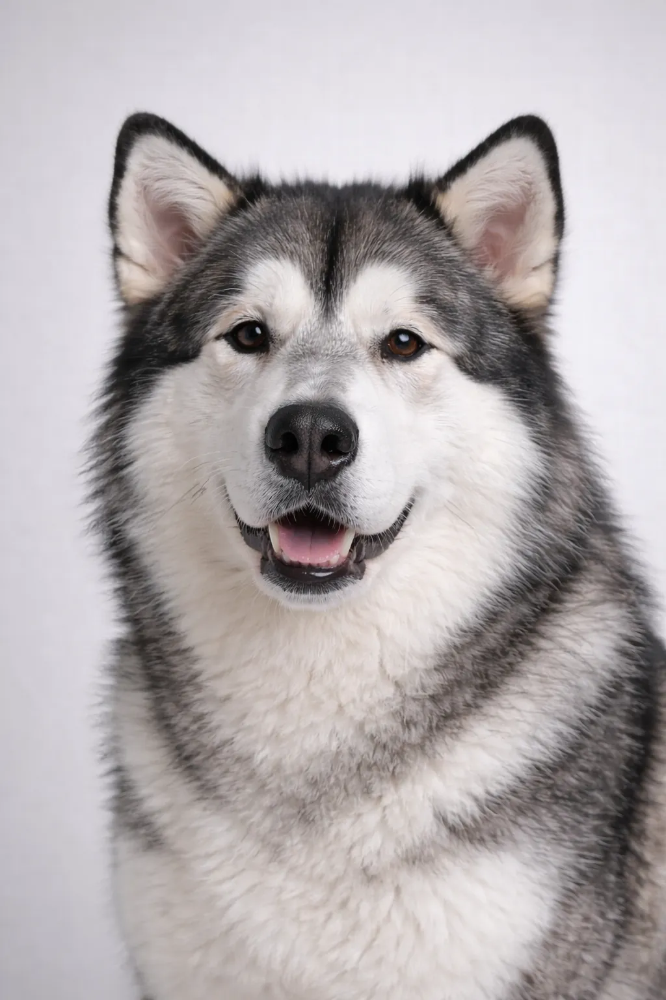

Malamute do Alasca
Feito para o trabalho, dedicado à família — uma raça grande com capacidades sérias.
23-25 in
75-86 lbs
Avaliações da Raça
Temperamento
Visão Geral
O Malamute do Alasca é um dos cães de trenó árticos mais antigos, originalmente criado para transportar cargas pesadas. São cães poderosos e robustos, com tórax profundo e corpo musculoso bem desenvolvido. Apesar da aparência de lobo, são amigáveis e afetuosos com as pessoas.
Temperamento
Os Malamutes são amigáveis e extrovertidos com as pessoas, inclusive com estranhos — são péssimos cães de guarda. São leais e devotados às suas famílias, mas têm uma veia independentee. Podem ser desafiadores no treinamento por causa da teimosia, mas são altamente inteligentes. Podem ser agressivos com outros cães, especialmente do mesmo sexo.
Saúde
Raça geralmente saudável. Fique atento à displasia do quadril, catarata, condrodisplasia (nanismo), hipotireoidismo e polineuropatia hereditária. Consultas veterinárias e exames de saúde regulares são recomendados.
Exercício
Alta necessidade de exercício — pelo menos 2 horas diárias. Destacam-se em trilhas, mochilões, trenó e puxada de peso. Sem exercício adequado, podem se tornar destrutivos. Adoram o clima frio e podem ter dificuldades em climas quentes.
⦿ Esta Raça é Certa para Você?
✓ Ideal Para
- Pessoas e famílias ativas
- Quem gosta de atividades ao ar livre (trilhas, camping)
- Moradores de regiões frias
- Donos experientes
- Quem tem quintais grandes e cercados
✗ Não Ideal Para
- Moradores de apartamento
- Donos de primeira viagem
- Moradores de regiões quentes
- Quem quer um cão fácil de treinar
- Casas com animais pequenos (alto instinto de caça)
Nosso Veredicto: O Malamute do Alasca é perfeito para tutores ativos e experientes que amam atividades ao ar livre e conseguem oferecer uma liderança firme e consistente. Precisa de espaço para correr, bastante exercício e prospera em climas frios. Não é recomendado para apartamentos, climas quentes ou tutores de primeira viagem.